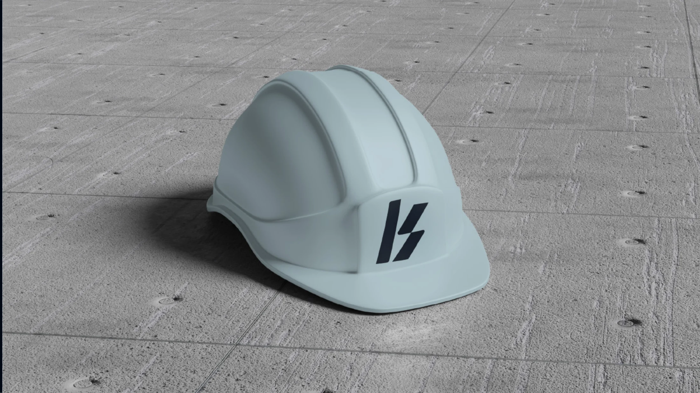

Konscret
2025
Precisão que se torna identidade. Um estudo de marca para traduzir força, movimento e confiança na construção civil.
- Projeto
- Branding · Projeto conceitual
- Marca
- Konscret
- Ano
- 2025
- Categorias
- Identidade Visual
- Atuação
- Conceito e identidade visual
Construção como linguagem
Konscret é um projeto conceitual de branding para o setor da construção civil. A proposta explora o encontro entre precisão técnica e expressão contemporânea, com um símbolo modular inspirado na letra K e diagonais que sugerem avanço e dinamismo.
Um sistema para diferentes escalas
A tipografia personalizada acompanha a geometria do símbolo. Azul profundo, tons claros e amarelo de sinalização organizam um sistema que se aplica a materiais de apresentação, equipamentos e comunicação de obra. A identidade foi pensada para manter clareza tanto nos pequenos detalhes quanto nas grandes superfícies.